5.5. Advanced topics
5.5.5. How do you optimize a process?
5.5.5.1. Single response case
5.5.5.1.2. |
Single response: Confidence region for search path |
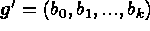
constitutes only a single (point) estimate computed based on a sample of N runs. If a different set of N runs is conducted, these will provide different parameter estimates, which in turn will give a different gradient. To account for this sampling variability, Box and Draper give a formula for constructing a "cone'' around the direction of steepest ascent that with certain probability contains the true (unknown) system gradient given by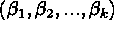
. The width of the confidence cone is useful to assess how reliable an estimated search direction is.Figure 5.4 shows such a cone for the steepest ascent direction in an experiment with two factors. If the cone is so wide that almost every possible direction is inside the cone, an experimenter should be very careful in moving too far from the current operating conditions along the path of steepest ascent or descent. Usually this will happen when the linear fit is quite poor (i.e., when the R2 value is low). Thus plotting the confidence cone is not so important as computing its width.
If you are interested in the details on how to compute such a cone (and
its width), see Technical Appendix 5B.
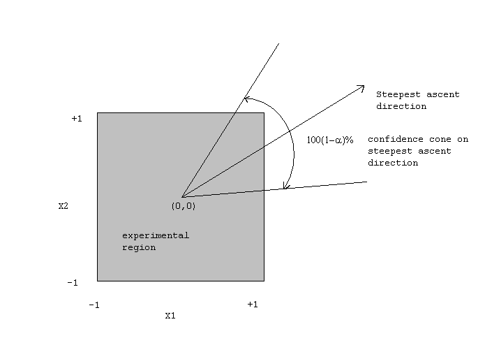
=============================================================================FIGURE 5.4: A Confidence Cone for the Steepest Ascent Direction in an Experiment with 2 Factors
Technical Appendix 5B: Computing a Confidence Cone on the Direction of Steepest Ascent.
Suppose the response of interest is adequately described by a first order polynomial model. Consider the inequality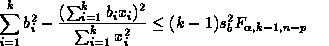
where
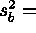
SSerror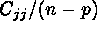
,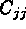
is the j-th diagonal element of the matrix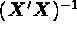
(for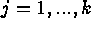
these values are all equal if the experimental design is a 2k-p factorial of at least Resolution III), and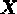
is the design matrix of the experiment (including columns for the intercept and 2nd order terms, if any). Any operating conditions with coordinates that satisfy this inequality generates a direction that lies within the
that satisfy this inequality generates a direction that lies within the 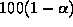
% confidence cone of steepest ascent if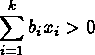
or inside the  %
confidence cone of steepest descent if
%
confidence cone of steepest descent if
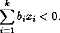
The inequality defines a cone with the apex at the
origin and center line located along the gradient of  .
.
A measure of "goodness'' of a search direction is given by the fraction of directions excluded by the 100
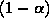
% confidence cone around the steepest ascent/descent direction (see Box and Draper, 1987 ) which is given by: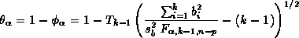
where
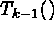
denotes the complement of the Student t distribution function with k-1 degrees of freedom (that is,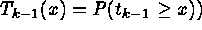
and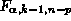
denotes an percentage point of the F distribution with k-1 and n-p degrees of freedom, where n-p is the error degrees of freedom. The value of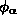
represents the fraction of directions included by the confidence cone. The smaller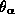
is, the wider the cone is, with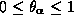
. Note that the inequality equation and the "goodness measure" equation are valid when operating conditions are given in coded units.Example: Computing  .
.
From the ANOVA table in the chemical experiment discussed earlier
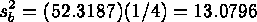
since
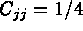
(j=2,3) for a factorial.
The fraction of directions excluded by a 95 % confidence cone in the direction
of steepest ascent is:
factorial.
The fraction of directions excluded by a 95 % confidence cone in the direction
of steepest ascent is:
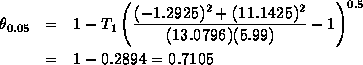
since
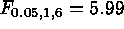
. Thus 71.05 % of the possible directions from the current operating point are excluded with 95% confidence. This is useful information that can be used to select a step length. The smaller is, the shorter the step should be, as the steepest ascent direction is
less reliable. In this example, with high confidence, the true steepest
ascent direction is within this cone of 29% of possible directions. For
k=2, 29% of 360o = 104.4o, so we are 95% confident
that our estimated steepest ascent path is within plus or minus 52.2o
of the true steepest path. In this case, we should not use a large step
along the estimated steepest ascent path.
is, the shorter the step should be, as the steepest ascent direction is
less reliable. In this example, with high confidence, the true steepest
ascent direction is within this cone of 29% of possible directions. For
k=2, 29% of 360o = 104.4o, so we are 95% confident
that our estimated steepest ascent path is within plus or minus 52.2o
of the true steepest path. In this case, we should not use a large step
along the estimated steepest ascent path.